받은 편지 4
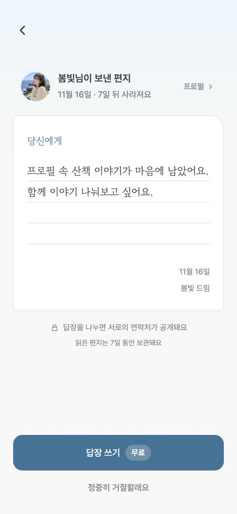
before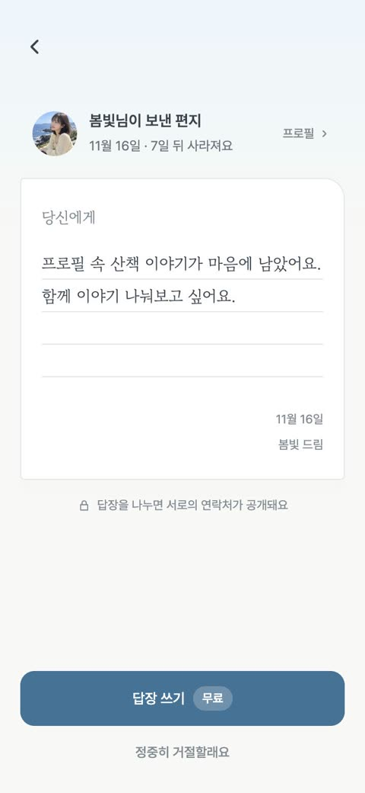
after- "당신에게" 파란 글씨 → 회색.
- "읽은 편지는 7일 동안 보관돼요"는 위 "7일 뒤 사라져요"와 같은 말이라 뺐어요.
보낸 편지 2
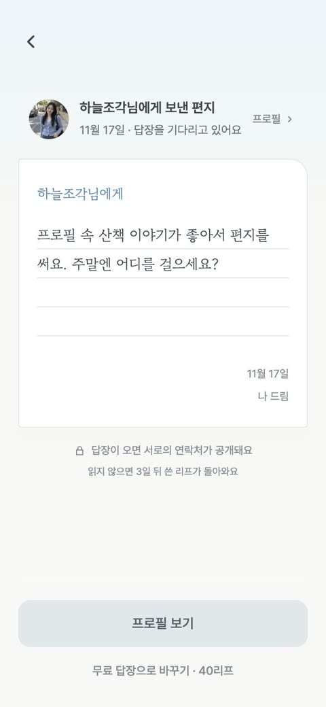
before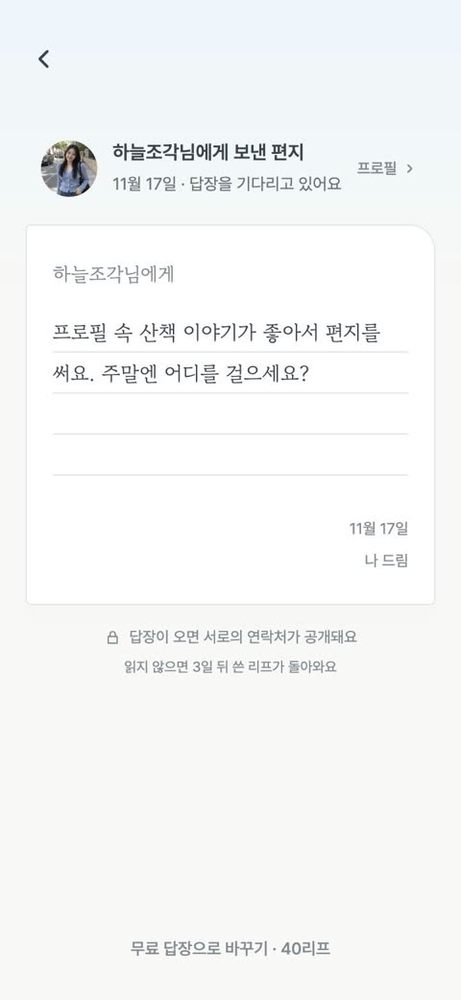
after- 회색 큰 "프로필 보기" 버튼을 뺐어요. 위 "프로필 ›"과 같은 일이에요.
- 아래엔 "무료 답장으로 바꾸기" 글자 버튼만 남아요.
편지 쓰기 3
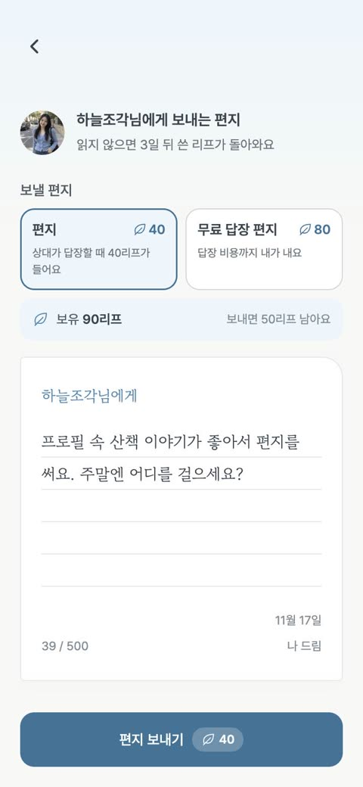
before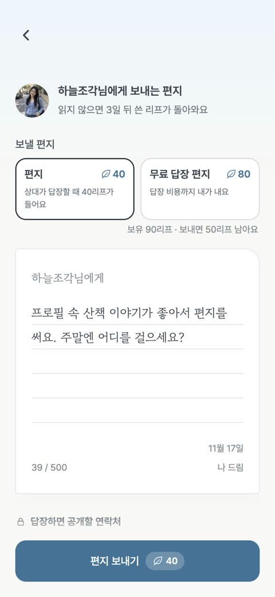
after- 고른 편지 종류: 파란 테두리 → 검정 테두리.
- 하늘 바탕 보유 리프 줄 → 카드 아래 오른쪽 작은 회색 글 "보유 90리프 · 보내면 50리프 남아요".
- 연락처 위 자물쇠 안내는 "답장하면 공개할 연락처" 소제목으로 바꾸고, "둘 중 하나는 적어 주세요." 덧글은 뺐어요(비우면 보낼 때 알림).
교환 탭 7
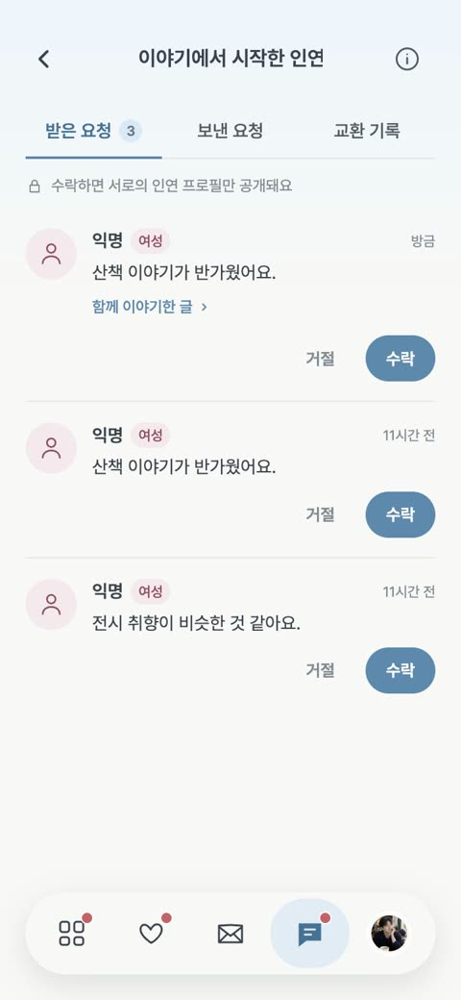
before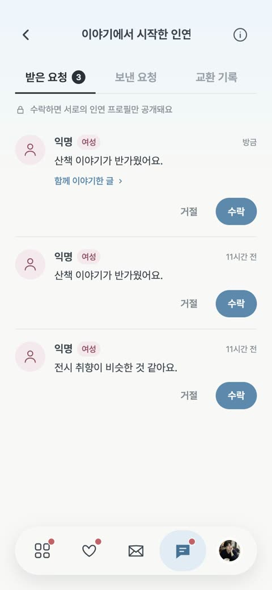
after- 마음함 탭과 같게 검정 글씨 · 검정 밑줄, 안 고른 탭은 연한 회색.
- 숫자 칩도 회색(고른 탭은 검정). 새 요청 빨강 칩은 그대로예요.
취향 설정 11
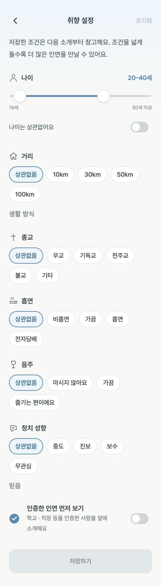
before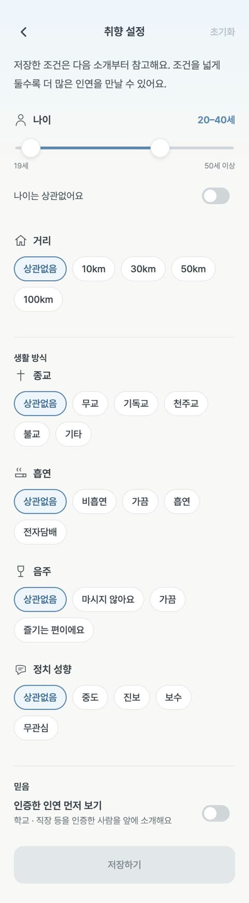
after- "생활 방식" · "믿음" 묶음 제목 위에 얇은 선을 긋고 아래 묶음에 붙였어요. 이제 앞 섹션 꼬리처럼 보이지 않아요.
- "인증한 인연 먼저 보기" 앞 파란 체크를 빼고 스위치만 남겼어요.
알림 설정 13
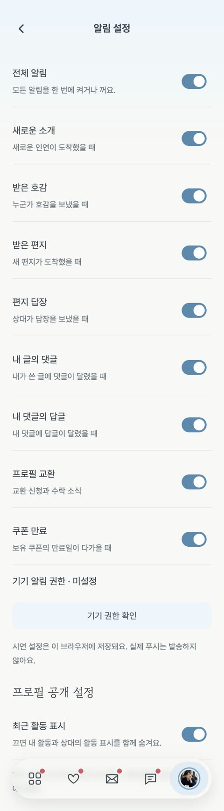
before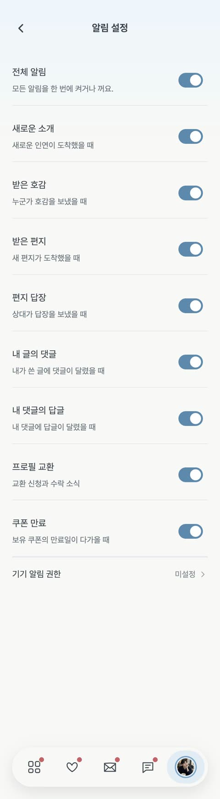
after- 끝에 섞인 "프로필 공개 설정 · 최근 활동 표시"는 인연 공개 화면으로 옮겨요(아래).
- 기기 권한은 "기기 알림 권한 · 미설정 ›" 한 줄로, 시연 덧글 두 개는 뺐어요.
인연 공개 13
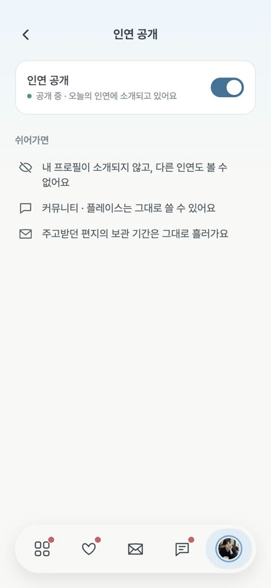
before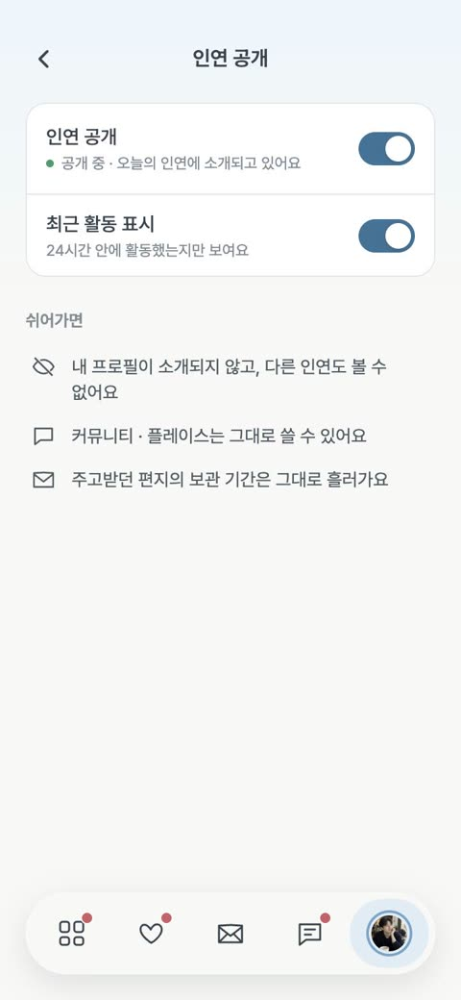
after- 알림 설정에서 옮겨 온 "최근 활동 표시" 스위치를 인연 공개 카드 안 둘째 줄에 두었어요.
마이페이지 12
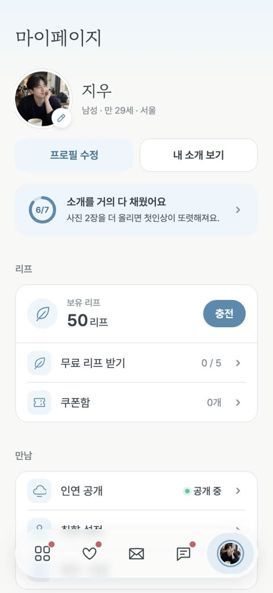
before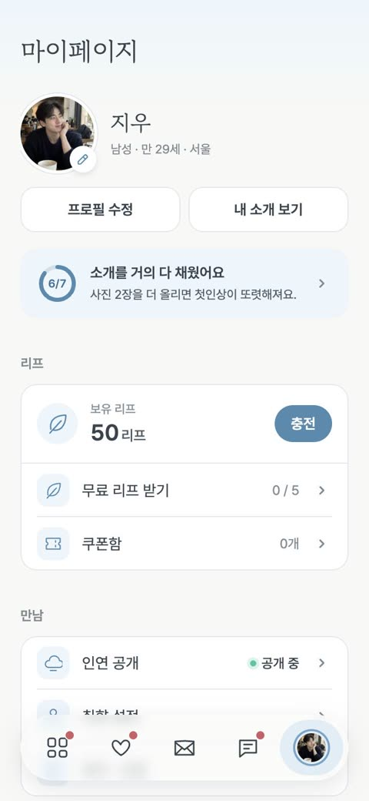
after- "프로필 수정"(하늘 바탕)과 "내 소개 보기"를 같은 흰 바탕 + 선으로 맞췄어요.
말투 14
- "첫 관심 보내기" → "첫 호감 보내기".
- 프로필 툴팁 "마음이 가면 관심을 보내 보세요." → "호감을". 남은 "관심"(버튼 읽어 주는 이름 · 알림 문구 등)도 같이 바꿔요.